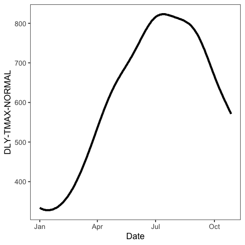
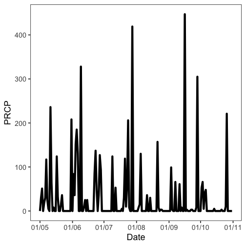
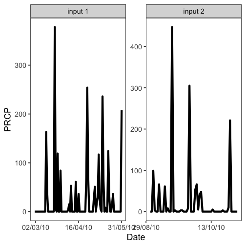

NCDC introduction
Scott Chamberlain
2020-08-14
Source:vignettes/ncdc_vignette.Rmd
ncdc_vignette.Rmdrnoaa is an R wrapper for many NOAA data types, including National Climatic Data Center (NCDC).
Get info on a station by specifying a datasetid, locationid, and stationid
ncdc_stations(datasetid='GHCND', locationid='FIPS:12017', stationid='GHCND:USC00084289')
#> $meta
#> NULL
#>
#> $data
#> elevation mindate maxdate latitude name datacoverage
#> 1 17.7 1899-01-01 2020-08-12 28.80286 INVERNESS 3 SE, FL US 1
#> id elevationUnit longitude
#> 1 GHCND:USC00084289 METERS -82.31266
#>
#> attr(,"class")
#> [1] "ncdc_stations"Search for data and get a data.frame
out <- ncdc(datasetid='NORMAL_DLY', datatypeid='dly-tmax-normal', startdate = '2010-05-01', enddate = '2010-05-10')
out$data
#> # A tibble: 25 x 5
#> date datatype station value fl_c
#> <chr> <chr> <chr> <int> <chr>
#> 1 2010-05-01T00:00:00 DLY-TMAX-NORMAL GHCND:AQW00061705 869 C
#> 2 2010-05-01T00:00:00 DLY-TMAX-NORMAL GHCND:CAW00064757 607 Q
#> 3 2010-05-01T00:00:00 DLY-TMAX-NORMAL GHCND:CQC00914080 840 R
#> 4 2010-05-01T00:00:00 DLY-TMAX-NORMAL GHCND:CQC00914801 858 R
#> 5 2010-05-01T00:00:00 DLY-TMAX-NORMAL GHCND:FMC00914395 876 P
#> 6 2010-05-01T00:00:00 DLY-TMAX-NORMAL GHCND:FMC00914419 885 P
#> 7 2010-05-01T00:00:00 DLY-TMAX-NORMAL GHCND:FMC00914446 885 P
#> 8 2010-05-01T00:00:00 DLY-TMAX-NORMAL GHCND:FMC00914482 868 R
#> 9 2010-05-01T00:00:00 DLY-TMAX-NORMAL GHCND:FMC00914720 899 R
#> 10 2010-05-01T00:00:00 DLY-TMAX-NORMAL GHCND:FMC00914761 897 P
#> # … with 15 more rowsNote that the value column has strangely large numbers for temperature measurements. By convention, rnoaa doesn’t do any conversion of values from the APIs and some APIs use seemingly odd units.
You have two options here:
Use the
add_unitsparameter onncdc()to havernoaaattempt to look up the units. This is a good idea to try first.Consult the documentation for whiechever dataset you’re accessing. In this case,
GHCNDhas a README (https://www1.ncdc.noaa.gov/pub/data/ghcn/daily/readme.txt) which indicatesTMAXis measured in tenths of degrees Celcius.
See a data.frame with units
As mentioned above, you can use the add_units parameter with ncdc() to ask rnoaa to attempt to look up units for whatever data you ask it to return. Let’s ask rnoaa to add units to some precipitation (PRCP) data:
with_units <- ncdc(datasetid='GHCND', stationid='GHCND:USW00014895', datatypeid='PRCP', startdate = '2010-05-01', enddate = '2010-10-31', limit=500, add_units = TRUE)
head( with_units$data )
#> # A tibble: 6 x 9
#> date datatype station value fl_m fl_q fl_so fl_t units
#> <chr> <chr> <chr> <int> <chr> <chr> <chr> <chr> <chr>
#> 1 2010-05-01T00:… PRCP GHCND:USW00014… 0 "T" "" 0 2400 mm_ten…
#> 2 2010-05-02T00:… PRCP GHCND:USW00014… 30 "" "" 0 2400 mm_ten…
#> 3 2010-05-03T00:… PRCP GHCND:USW00014… 51 "" "" 0 2400 mm_ten…
#> 4 2010-05-04T00:… PRCP GHCND:USW00014… 0 "T" "" 0 2400 mm_ten…
#> 5 2010-05-05T00:… PRCP GHCND:USW00014… 18 "" "" 0 2400 mm_ten…
#> 6 2010-05-06T00:… PRCP GHCND:USW00014… 30 "" "" 0 2400 mm_ten…From the above output, we can see that the units for PRCP values are “mm_tenths” which means tenths of a millimeter. You won’t always be so lucky and sometimes you will have to look up the documentation on your own.
Plot data, super simple, but it’s a start
out <- ncdc(datasetid='NORMAL_DLY', stationid='GHCND:USW00014895', datatypeid='dly-tmax-normal', startdate = '2010-01-01', enddate = '2010-12-10', limit = 300)
ncdc_plot(out)
plot of chunk six
Note that PRCP values are in units of tenths of a millimeter, as we found out above.
More on plotting
Example 1
Search for data first, then plot
out <- ncdc(datasetid='GHCND', stationid='GHCND:USW00014895', datatypeid='PRCP', startdate = '2010-05-01', enddate = '2010-10-31', limit=500)Default plot
ncdc_plot(out)plot of chunk ncdc-plot-zero
Create 14 day breaks
ncdc_plot(out, breaks="14 days")
plot of chunk ncdc-plot-0
One month breaks
ncdc_plot(out, breaks="1 month", dateformat="%d/%m")
plot of chunk ncdc-plot-1
Example 2
Search for data
out <- ncdc(datasetid='GHCND', stationid='GHCND:USW00014895', datatypeid='PRCP',
startdate = '2010-05-01', enddate = '2010-10-31', limit=500)Make a plot, with 6 hour breaks, and date format with only hour
ncdc_plot(out, breaks = "1 month", dateformat = "%d/%m")
plot of chunk ncdc-plot-2
Combine many calls to noaa function
Search for two sets of data
out1 <- ncdc(datasetid='GHCND', stationid='GHCND:USW00014895', datatypeid='PRCP', startdate = '2010-03-01', enddate = '2010-05-31', limit=500)
out2 <- ncdc(datasetid='GHCND', stationid='GHCND:USW00014895', datatypeid='PRCP', startdate = '2010-09-01', enddate = '2010-10-31', limit=500)Then combine with a call to ncdc_combine
df <- ncdc_combine(out1, out2)
head(df[[1]]); tail(df[[1]])
#> # A tibble: 6 x 8
#> date datatype station value fl_m fl_q fl_so fl_t
#> <chr> <chr> <chr> <int> <chr> <chr> <chr> <chr>
#> 1 2010-03-01T00:00:00 PRCP GHCND:USW00014895 0 "T" "" 0 2400
#> 2 2010-03-02T00:00:00 PRCP GHCND:USW00014895 0 "T" "" 0 2400
#> 3 2010-03-03T00:00:00 PRCP GHCND:USW00014895 0 "T" "" 0 2400
#> 4 2010-03-04T00:00:00 PRCP GHCND:USW00014895 0 "" "" 0 2400
#> 5 2010-03-05T00:00:00 PRCP GHCND:USW00014895 0 "" "" 0 2400
#> 6 2010-03-06T00:00:00 PRCP GHCND:USW00014895 0 "" "" 0 2400
#> # A tibble: 6 x 8
#> date datatype station value fl_m fl_q fl_so fl_t
#> <chr> <chr> <chr> <int> <chr> <chr> <chr> <chr>
#> 1 2010-10-26T00:00:00 PRCP GHCND:USW00014895 221 "" "" 0 2400
#> 2 2010-10-27T00:00:00 PRCP GHCND:USW00014895 0 "" "" 0 2400
#> 3 2010-10-28T00:00:00 PRCP GHCND:USW00014895 0 "T" "" 0 2400
#> 4 2010-10-29T00:00:00 PRCP GHCND:USW00014895 0 "T" "" 0 2400
#> 5 2010-10-30T00:00:00 PRCP GHCND:USW00014895 0 "" "" 0 2400
#> 6 2010-10-31T00:00:00 PRCP GHCND:USW00014895 0 "" "" 0 2400Then plot - the default passing in the combined plot plots the data together. In this case it looks kind of weird since a straight line combines two distant dates.
ncdc_plot(df)
plot of chunk ncdc-plot-line
But we can pass in each separately, which uses facet_wrap in ggplot2 to plot each set of data in its own panel.
ncdc_plot(out1, out2, breaks="45 days")
plot of chunk ncdc-plot-panel